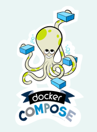
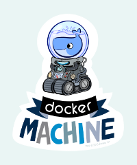
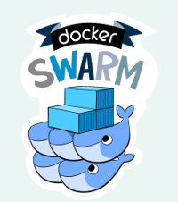
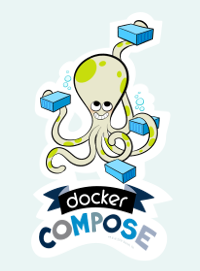
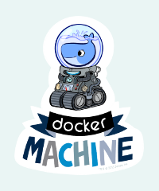
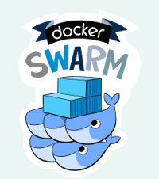

Docker 1.9: what's new ?
Manuel Vacelet
Docker project
 





Engine
$ docker run -ti ubuntu bash- Container management
- Manage images
Compose
- Container orchestration
- Assemble several containers to create a stack
$ docker-compose up -d
web:
image: enalean/tuleap-aio-dev:nodb
links:
- ldap:ldap
volumes:
- .:/usr/share/tuleap
env_file:
- .env
volumes_from:
- tuleap_data
ldap:
image: enalean/ldap
env_file:
- .env
volumes_from:
- tuleap_ldap_data
Machine
$ docker-machine -d rackspace my-docker-host
$ docker run $(docker-machine config my-host-host) -ti ubuntu bash
- Build host where containers will be run
- Remove the burden to get a docker engine up & running
Swarm
- Cluster management
- Distribute against strategy & constaints
Engine (1.9)
- Network
- Volumes
Engine (1.9) - Network
Create virtual networks and place containers in without pain
Demo !
Engine (1.9) - Network
- Automated service disovery, deprecate --link usage
- Isolate stacks
- Even work even on multi-host (swarm)!
Engine (1.9) - Volumes
$ docker create --name=db-data -v /var/lib/mysql mysql true
$ docker run -d --volumes-from db-data mysql
- Allows to identify "clearly" data containers
- Support plugins
- ... not that much for the time being
Compose (1.5.1)
- Variables
- Multiple compose files
Machine (0.5.1)
- Split & externalize
- On the road to kick boot2docker-cli
Swarm (1.0)
- General availability
- Stability & reliability
- 1,000 nodes, 30,000 containers, 1 Swarm manager, 250ms